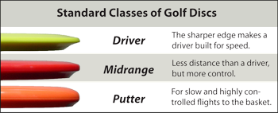

Disc golfi kettad

Siin leheküljel on võimalik tutvuda disc golfi ketastega.
Disc golfis jagatakse kettad üldjuhul neljaks erinevaks tüübiks: Putter, Mid-range, Fairway ja Distance.
Disc golfi kettad ja nende jaotusPõhilised tüübid on
- Putterid
- Mid-range
- Driverid
| 1 | 2 | 3 |
|---|---|---|
| A | B | C |